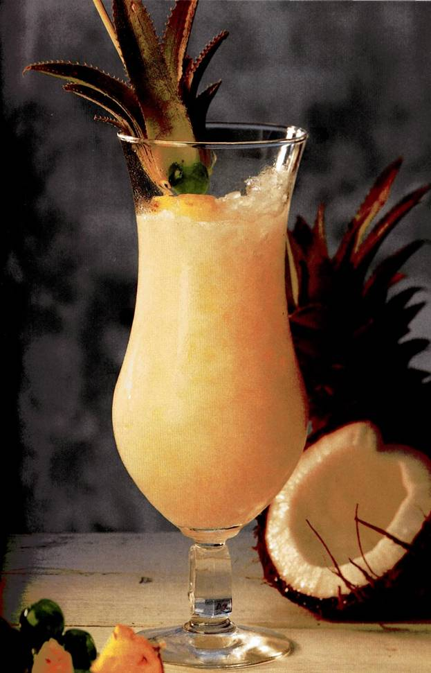
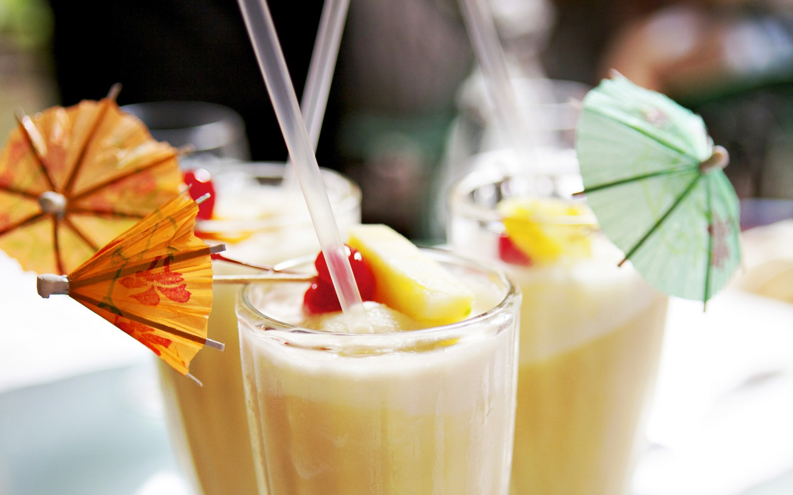
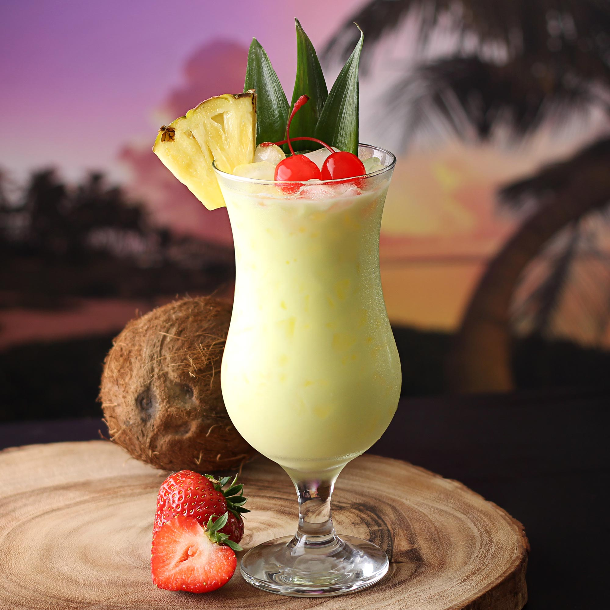

Пина Колада
- светлый (белый) ром – 30 мл
- тананасовый сок – 90 мл
- кокосовое молоко (ликер Малибу) – 30 мл
- лед в кубиках – 50 грамм
- сливки (11-15% жирности) – 20 мл (необязательно)
- ломтик ананаса или коктейльная вишенка – 1 штука

История создания
Согласно самой популярной версии классический рецепт Пина Колада придумал в 1954 году бармен Рамон Марерро, работавший на Карибских островах в баре «Beachcomber». После трех месяцев экспериментов со смешиванием разных ингредиентов у него получился коктейль, вкус которого очень понравился посетителям. Спустя несколько лет рецепт попал в США, а потом и в Европу.
Некоторые историки уверяют, что прообраз Пина Колада появился в 1820 году. Для поддержания боевого духа капитан карибских пиратов Роберто Кофреси давал членам своей команды напиток, состоящий из рома, ананасового сока и кокосового молока. Современные авторы только подобрали правильные пропорции.
Начиная с 1961 года, Пина Колада входит в официальный список IBA (Международной ассоциации барменов). Считается, что каждый уважающий себя бармен должен уметь по памяти готовить этот коктейль.
Способ приготовления
1. Все ингредиенты (кроме вишенки и ломтика ананаса) взбить в блендере до однородного состояния.
2. Полученную смесь перелить в высокий бокал.
3. Украсить коктейль вишенкой, долькой ананаса или взбитыми сливками.
4. Подавать вместе с трубочкой.

Найти в России настоящее кокосовое молоко сложно, поэтому в качестве заменителя используется кокосовый ликер Малибу. Сок лучше брать свежий, восстановленный из концентрата немного портит вкус. Сливки в составе необязательны, при жирности выше 15% они могут свернуться в кислом цитрусовом соке.
Считается, что для приготовления коктейля нужен кубинский или пуэрто-риканский ром. На самом деле подойдет любой качественный ром независимо от страны производства.
Как пить пина коладу
Этот карибский алкогольный коктейль принадлежит категории «лонг дринк», т.е. подавать его необходимо большим объемом – от 160 мл. Верхняя планка – 400 мл.
Как пить Пина Коладу в классической версии, понятно всем – через соломинку. Густые же варианты (если использована фруктовая мякоть, мороженое и т.д.) максимально через ту же трубочку избавляют от жидкости, а остальное можно употребить как десерт – длинной ложечкой.
